Procurar um pet
Todos os Pets Disponíveis
 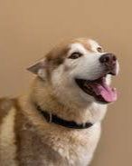
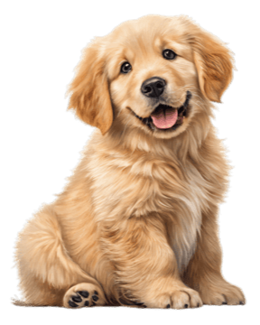
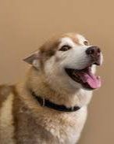
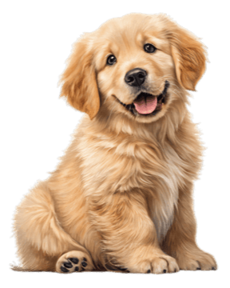
Fred
🐾 Idade: 3 meses 🐶 Raça: Salsicha 💉 Vacinas em dia 🎾 Brincalhão e dócil ❌ Não é castrado
Quero Adotar
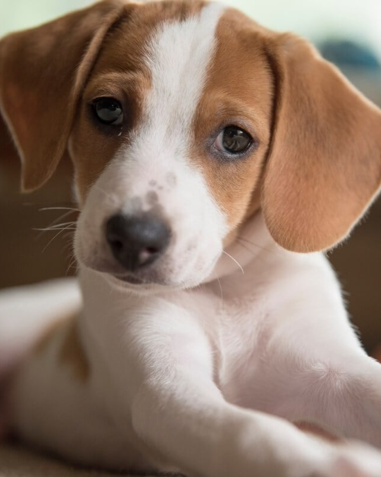
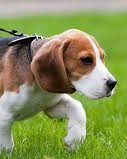
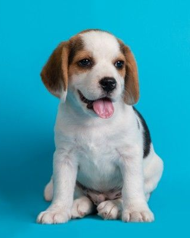
Lua
🐾 Idade: 2 anos 🐶 Raça: Vira-Lata 💉 Vacinas em dia 💤 Quietinha e carinhosa ✅ Castrada
Quero Adotar
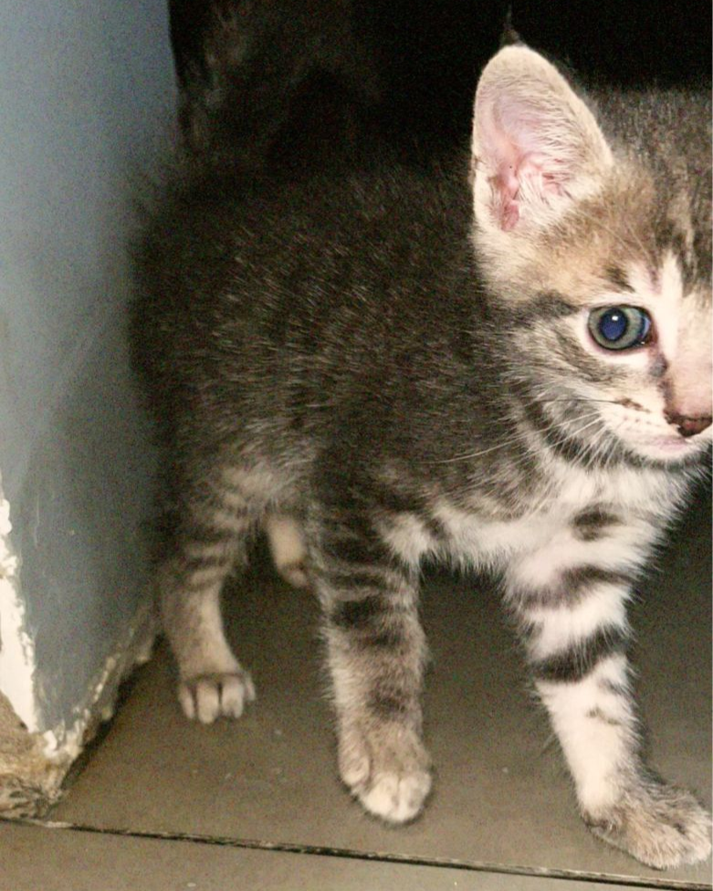
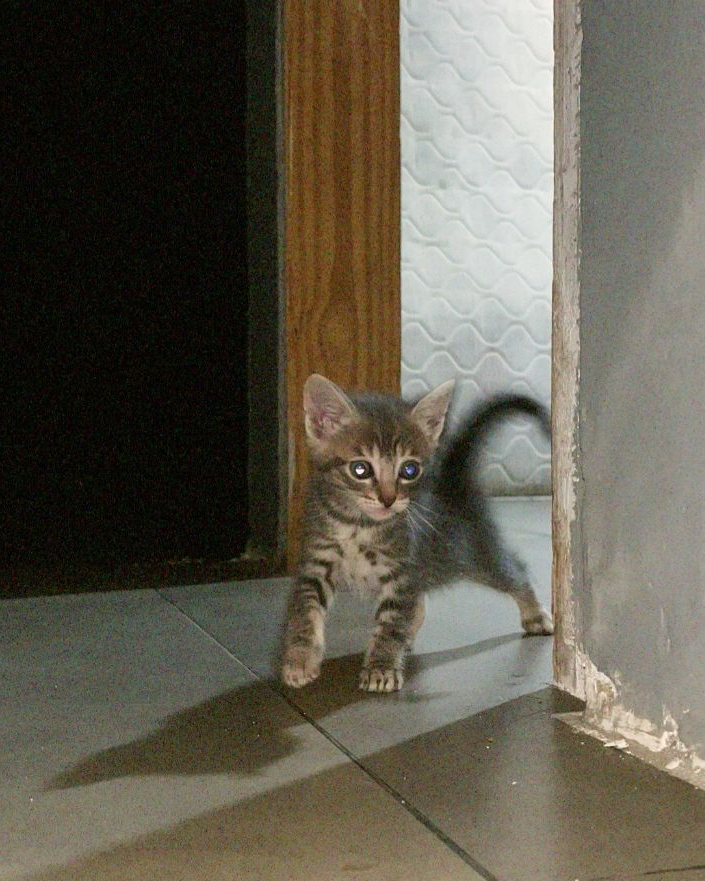
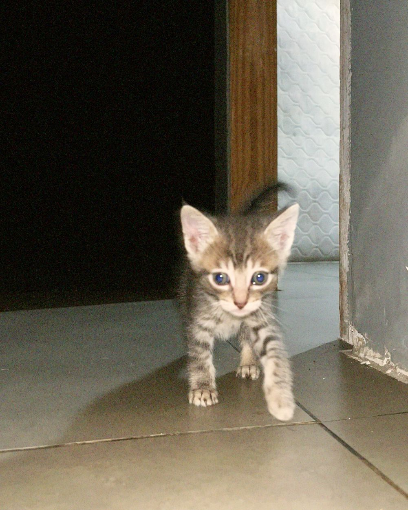
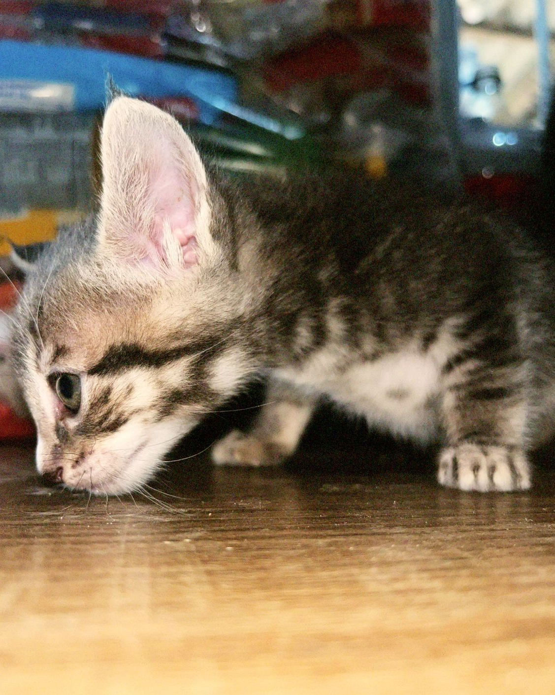
Mimi
🐾 Idade: 1 ano 🐱 Raça: Siamês 💉 Vacinas em dia 👀 Curiosa e carinhosa ✅ Castrada
Quero Adotar
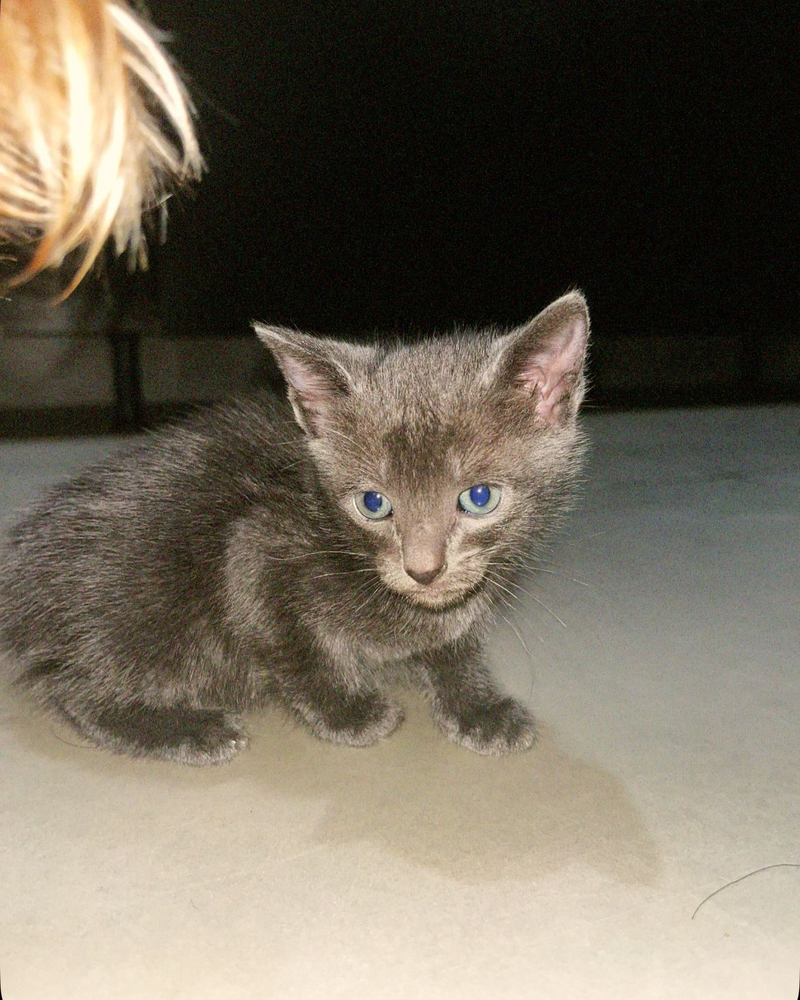
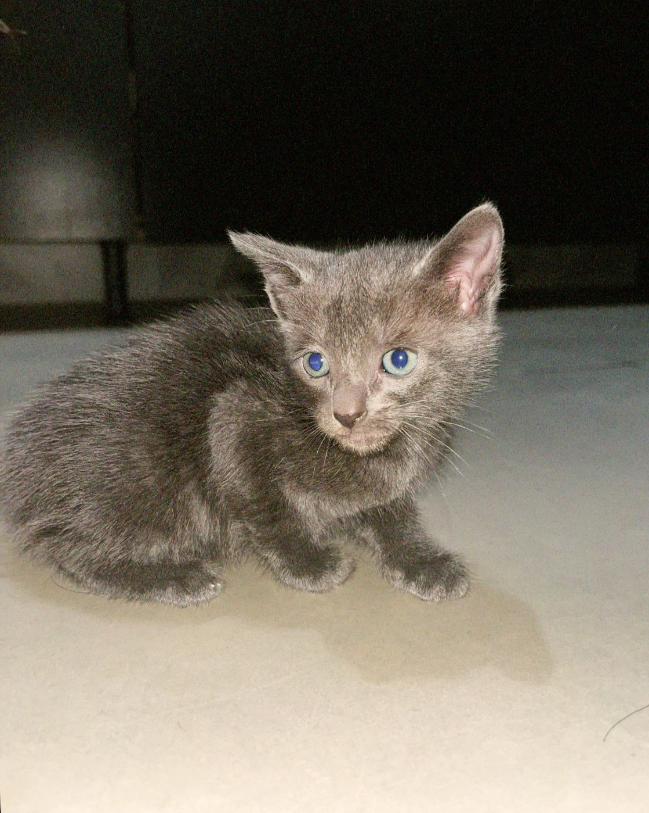
Tom
🐾 Idade: 4 meses 🐱 Raça: Vira-Lata 💉 Vacinas em dia 🎾 Brincalhão ✅ Castrado
Quero Adotar